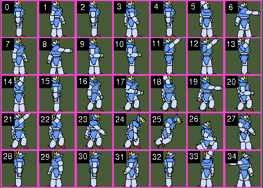

The last section was a basic overview of graphics so in this section, I am going to go more indepth on sprites. In RCBasic, sprites are 2D objects with animation and physics properties. Sprite physics and animations are updated each time Update() is called.
To create a sprite, you must have a sprite canvas as your active canvas. Here is a quick explanation of how to open a new sprite canvas.
pos_x = 0
pos_y = 0
viewport_width = 640
viewport_height = 480
sprite_canvas = OpenCanvasSpriteLayer(pos_x, pos_y, viewport_width, viewport_height)
Sprite canvases are opened with OpenCanvasSpriteLayer(). You only need to pass the position in the window where the viewport starts at and the size of the viewport. Sprite canvases don't have a fixed size since it only renders the part of the canvas that is visible.
Once you have opened a sprite canvas, use the Canvas() function to set the sprite canvas as active.
Canvas(sprite_canvas)
Now you are ready to create a sprite. To create a sprite, normally you would need a sprite sheet. The sprite sheet is a image file that contains all the animations for your sprite.
spriteSheet = LoadImage("graizor.png")
frame_width = 32
frame_height = 32
mySprite = CreateSprite(spriteSheet, frame_width, frame_height)
Sprites are created with the CreateSprite() function. Sprites have a default animation that is 1 frame in length and set as the first frame in the sprite sheet. The frames in a sprite sheet start at 0 and increase going from left to right and continue incrementing down each row. So if each row as 4 frames then the first row would have frames 0 to 3 and the second row would start at 4 and continue until the end of the last row.

To animate our sprite, we have to create an animation for it. You can create an animation with the CreateSpriteAnimation() function.
walk_left_animation = CreateSpriteAnimation(mySprite, 4, 12)
SetSpriteAnimationFrame(mySprite, walk_left_animation, 0, 28)
SetSpriteAnimationFrame(mySprite, walk_left_animation, 1, 29)
SetSpriteAnimationFrame(mySprite, walk_left_animation, 2, 30)
SetSpriteAnimationFrame(mySprite, walk_left_animation, 3, 31)
CreateSpriteAnimation() takes 3 parameters
SetSpriteAnimationFrame() takes 4 parameters
Now to play the animation, we just set the animation on the sprite.
SetSpriteAnimation(mySprite, walk_left_animation, -1)
SetSpriteAnimation() takes the sprite, the animation, and the last parameter is the number of times to loop the animation. Setting it to a value less than 0 will cause it to loop infinitely.
Thats the basics of sprite animation. Next lets go over sprite physics. By default, a sprite is non-solid which means it won't collide with anything. To change our sprite to solid, we just call the SetSpriteSolid() function.
SetSpriteSolid(mySprite, TRUE)
To have the sprite fall, we need to set gravity for our sprite canvas. We do that with SetGravity2D().
SetGravity2D(0, 30)
SetGravity2D() takes an x and y value for the direction gravity pulls in. We just want gravity pulling down on our sprite. This would have our sprite falling forever since there is no ground for the sprite to collide with. So we need to create another sprite for the ground.
ground = CreateSprite(-1, 640, 100)
SetSpriteSolid(ground, TRUE)
SetSpritePosition(ground, 0, 380)
SetSpriteType(ground, SPRITE_TYPE_STATIC)
There is a few things to go over with how the ground was created. First, we use -1 instead of an image for the ground. If you use a value less than 0 when creating a sprite, it will just create a physics object without any animation. This works well for a ground since we can draw an image on a paint canvas or draw a tile map.
On the next 2 lines we are setting the ground as solid and setting the grounds position to the bottom of our screen.
The last line is setting the ground sprite as static. This sets the ground as an unmovable object.
Since the ground does not have an image associated with it, we can just open a paint canvas over the sprite layer and draw a rectangle covering the area where our ground physics object is.
paint_canvas = OpenCanvas(640, 480, 0, 0, 640, 480, 1)
SetCanvasZ(paint_canvas, 1)
We use OpenCanvas() from the last section to open a paint canvas here. Setting the last parameter in OpenCanvas() to 1 will make the canvas background clear so we can see the sprite canvas behind it.
SetCanvasZ() changes the render order for the canvas. Canvases with a higher Z order are drawn on top of canvases with lower Z order. Now we can switch to the paint canvas to draw a rectangle using the functions from the last section.
SetColor( RGB(200, 0, 0) ) 'Sets the drawing color to red
RectFill(0, 380, 640, 100) 'Draws a filled rectangle with the current draw color
We are drawing our rectangle at the location where we positioned our ground sprite above with the size that we made our ground sprite object. That will make our sprite ground visible for us to land on.
The last thing we will do is make our sprite move when we press a key.
If Key(K_RIGHT) Then
SetSpriteLinearVelocity(mySprite, 30, 0)
End If
Key() returns true if the key code parameter is pressed. You can see a list of all the key codes in the Key Codes section in the Appendix.
We use SetSpriteLinearVelocity() to move the sprite instead of SetSpritePosition() because we don't want to directly move a sprite that we want physics to be applied to. There are a few functions for applying forces to a sprite that you can find under the Sprite Physics section in the manual.
And that is it for our simple overview of sprites. To see a full working example of the concepts covered here, try out the Sprite Test example in the examples folder.